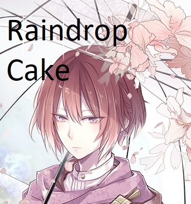
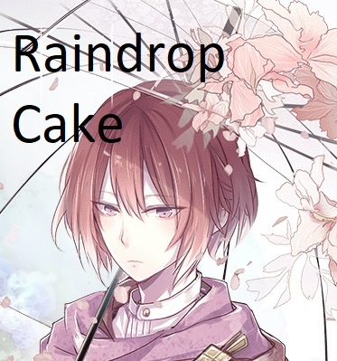

Cloud Tea
C.V. Cristina Vee
Pouvoirs et abilités
Type : Soin : Les Food souls de type soins restent toujours à l'arrière de la
ligne de front et redonnent de la vie à leur alliés, tout en leur octroyant parfois certains boost.
- Combat
- Flute of soft melody : Soigne 85 pv par secondes, pour 3 secondes.
- Super Melody of life : En jouant de la flûte, Cloud tea redonne 300 points de vie à tout ses alliés ainsi que 240 HP par seconde pour 4 secondes.
- Melody of life : Redonne 613 HP par seconde à tout ses alliés pour 4 secondes.
Statistques Prioritaires
- HP
- Def
- Critique
- Vitesse
Autres
- Attaque
-
Attaque critique


 
